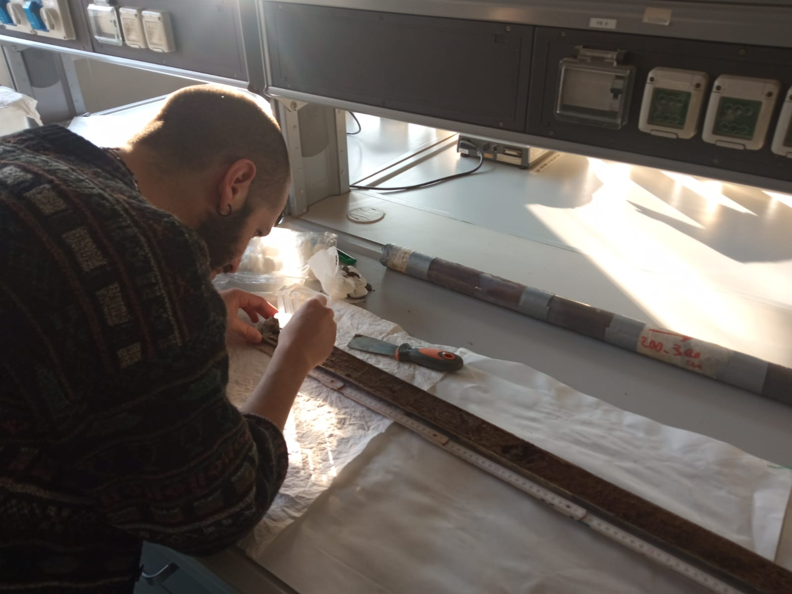

Research & scientific service
Wetland palaeoecology, PROTO, biodiversity data and scientific communities.
Palaeoecology · Numerical ecology · Biodiversity informatics
PhD candidate · University of Modena and Reggio Emilia
I study how plant biodiversity and vegetation change through time, combining fossil pollen records, numerical ecology and biodiversity informatics.
My doctoral research focuses on Italian wetland environments. I use pollen analysis and quantitative approaches to investigate vegetation dynamics and connect palaeoecological evidence with present-day biodiversity.
Alongside this work, I develop tools to link pollen types with plant taxa and improve the integration and reuse of palaeoecological data.

Laboratory of Palynology and Palaeobotany , Department of Life Sciences, University of Modena and Reggio Emilia, Italy. PhD in Models and Methods for Material and Environmental Sciences, since November 2023. Supervisor: Prof. Assunta Florenzano.
Wetland palaeoecology, PROTO, biodiversity data and scientific communities.
Articles, manuscripts, book chapters, proceedings and software records.
Oral presentations, posters, event organisation and scientific training.
University teaching, tutoring, academic seminars and public engagement.